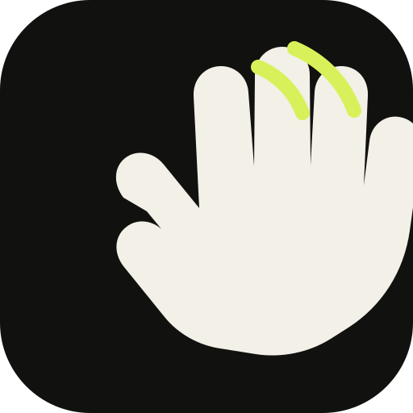

01
Feel the impact
The internal motion sensor catches the quick vibration from a deliberate tap.

TapTap DownloadTapTap turns a small knock on your MacBook into a key, a modifier, or a complete workflow. Quietly local. Entirely yours.
TapTap listens for impact rhythms, not sound. It turns the movement into an ordinary keyboard event that your existing tools already understand.
The internal motion sensor catches the quick vibration from a deliberate tap.
Adjust sensitivity, tap separation, and the gesture window for your desk and device.
Pulse a key or hold a modifier. The app in front decides what happens next.
These are the default slots. In the app, choose any key — even Option, Command, Control, or Shift — and decide whether it pulses or stays held until the next tap.
Read the setup guideSelect a gesture to preview its signal.
In Apple Shortcuts, open a Shortcut’s details and choose “Add Keyboard Shortcut”. Press the same key you assigned in TapTap. Now a tap can start the whole workflow.
Example: assign F14 to a Shortcut that opens your focus workspace.
shortcuts list
shortcuts run "My Shortcut"